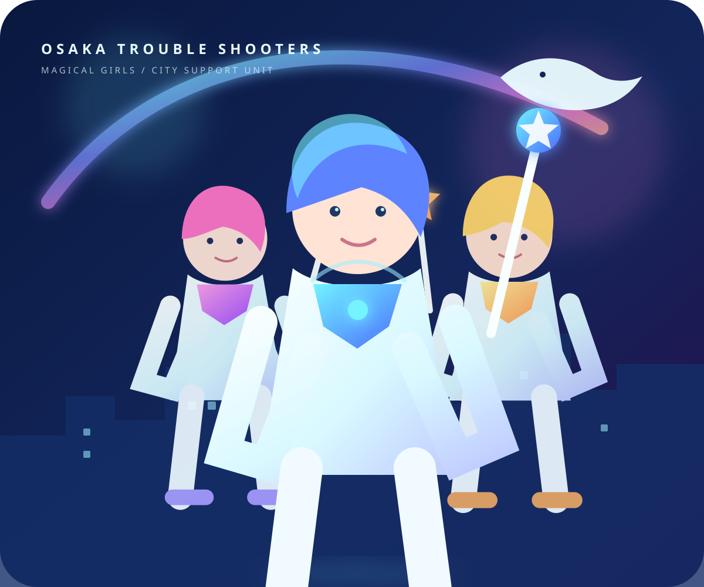

虹とクジラがいる日常。
昼も夜も消えない巨大な虹。ビル群の上を悠々と泳ぐクジラ。OSAKAでは、それがいつもの景色です。
 OSAKAMETAVERSE
OSAKAMETAVERSE
FULL-DIVE CITY METAVERSE / HELLOVERSE
虹が輝き、クジラが空を泳ぐ。街で働いて、遊んで、出会って、あなただけの毎日をつくる。OSAKAは、大阪市を舞台にしたフルダイブ型メタバースです。

01 / WELCOME TO OSAKA
梅田、難波、新世界、大阪城。見慣れた街並みの向こうには、現実にはない空中回廊、光る路地、幻想的な夜空が広がっています。
昼も夜も消えない巨大な虹。ビル群の上を悠々と泳ぐクジラ。OSAKAでは、それがいつもの景色です。
電車で移動しても、路地裏を散歩しても、屋上で夜景を眺めてもいい。効率よりも「暮らす楽しさ」を大切にした都市です。
姿も年齢もスタイルも、OSAKAではあなた次第。ベースアバターから自分らしさを少しずつ育てていけます。
02 / TROUBLE SHOOTERS
OSAKAで街のトラブルに対応する運営スタッフ、それが「魔法少女」。専用アバターと管理用の“魔法”を使って、ユーザーの冒険と暮らしをサポートします。
※「魔法」はOSAKA内の演出名称です。実際にはHELLOVERSEの管理システムを使用しています。
03 / LIVE YOUR OSAKA
OSAKAには、観光だけでは終わらない毎日があります。働く、食べる、買う、遊ぶ。好きな過ごし方を見つけてください。
カフェ、ショップ、イベント施設などで働いて¥ENを獲得。OSAKAでの仕事も、ひとつの遊び方です。
街で働く →現実をベースにしながら大胆に拡張された大阪市を探索。空中商店街や幻想区画も待っています。
街をめぐる →友達をつくる。イベントへ行く。行きつけの店を見つける。OSAKAでしか生まれない思い出を。
出会いを楽しむ →服、髪、瞳、モーション。細部までこだわって、理想のアバターを自分だけの存在へ。
自分をつくる →04 / OSAKA CURRENCY
¥ENはOSAKA内の公式通貨。街の仕事で稼ぐほか、現実通貨からチャージして利用できます。
05 / HOW TO LOGIN
専用ヘッドギアは、視覚・聴覚・触覚・味覚・嗅覚をOSAKAのアバターへ同期。街の風も、料理の味も、その場にいるように感じられます。
CITY SUPPORT PROMISE
OSAKAでは、システム監視とトラブルシューターによるサポート体制を整備。困ったことがあれば、街の魔法少女へお声がけください。